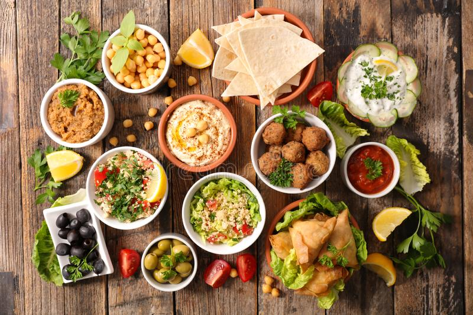

Breakfast
The Perfect Mankoush, A Real Arabic Breakfast
Is a popular Levantine food consisting of dough topped with thyme, cheese, keshek or ground meat
Let Me Tell You About This Plate
This casual assembly of eggs, ricotta and chargrilled vegetables makes an extraordinary weekend brunch.
The shakshuka
Here's a Maghrebi dish of eggs poached in a sauce of tomatoes, olive oil, peppers, onion and garlic, and commonly spiced with cumin, paprika, cayenne pepper, and nutmeg. Egg shakshouka evolved from an Ottoman meat stew, into a vegetarian egg-based dish
The Egyptian dish Kishk
Kishk is an Egyptian creamy rice pudding dish often topped with caramelized onions and poured over rice or eaten with pita bread.
"Foul" mashed Fava beans meal
It is usually cooked with olive oil, cumin, and could be served or garnished with Tahini chopped onions, garlic, parsley, lemon juice, or tomato sauce. The popular Egyptian dish is usually eaten with pita bread.
Fatteh (Pita with Chickpeas and Yogurt)
Arabic dish consisting of pieces of fresh, toasted, grilled, or stale flatbread covered with other ingredients that vary according to region
Hummus
Mashed chickpeas blended with tahini, lemon juice, and garlic.The standard garnish in the Middle East includes olive oil, a few whole chickpeas, parsley, and paprika.
The Amazing Morning Platter
A few variations of hummus (classic, red pepper hummus, white bean hummus), Labneh, Cheese, Flat bread, Olives, Meats and Veggies.
Lunch
The Lebanese main salad "Tabbouleh"
Is made mostly of finely chopped parsley, with tomatoes, mint, onion, bulgur (soaked, not cooked), and seasoned with olive oil, lemon juice, salt and sweet pepper. Some variations add lettuce, or use semolina instead of bulgur.
Fattouch
Levantine salad made from toasted or fried pieces of khubz (Arabic flat bread) combined with mixed greens and other vegetables, such as radishes and tomatoes.
The Cold Mezze Platter
Lebanese cold mezze platter which refers to Hummus, Baba ghanouj, Mutable and labna.

Warak Enab
Warak Enab translates to Middle Eastern style grape leaves stuffed with spiced rice and slowly cooked into mouthwatering perfection alongside tender lamb chops in a tangy lemon broth.
Raw meat dish
It consists of minced raw lamb mixed with fine bulgur and spices. And some raw meat balls.
Large Mixed Grilled Meat Platter
16 skewers of shish kabab ,4 lamb kufta kabab ,4 chicken koftah , 4 shosh tawook , grilled onions and tomatoes
Mansaf
Jordanian dish made of lamb cooked in a sauce of fermented dried yogurt and served with rice
falafel
Deep-fried ball or patty-shaped fritter made from ground chickpeas, fava beans, or both.They are wrapped in a flatbreadare topped with salads, pickled vegetables, hot sauce, and drizzled with tahini-based sauces.
Shawarma
Meat cut into thin slices, stacked in a cone-like shape, and roasted on a slowly-turning vertical rotisserie or spit.Thin slices are shaved off the cooked surface as it continuously rotates.
Hot Mezze Plate
Pastry platter consisting two of Meat Kebbe, Cheese Roll, Spinach Fatayer, Vegetable Samosa and Meat Sambousek
Spicy Fish
Baked fish, a spicy tahini sauce and other spices and ingredients and can be eaten as a sandwich, or served in plates.
Mloukhiyeh
Mulukhiyah is cooked with chicken or at least chicken stock for flavor and is served with white rice, accompanied with lemon or lime.Dinner
Sfiha for the night
Flatbread cooked with a minced meat topping, often lamb flavored with onion, tomato, pine nuts, and spices.
ShishBarak
Dumplings filled with seasoned lamb, onions, and pine nuts that are boiled, baked, or fried and served in a warm yogurt sauce with melted butter, mint, sumac, and more toasted pine nuts.
The Egyptian dish Kishk
Kishk is an Egyptian creamy rice pudding dish often topped with caramelized onions and poured over rice or eaten with pita bread.
Beef and chicken shawarma plate
Shawarma served with hummus and salad
Fattouch
Levantine salad made from toasted or fried pieces of khubz (Arabic flat bread) combined with mixed greens and other vegetables, such as radishes and tomatoes.
Fatteh (Pita with Chickpeas and Yogurt)
Arabic dish consisting of pieces of fresh, toasted, grilled, or stale flatbread covered with other ingredients that vary according to region.
Hummus
mashed chickpeas blended with tahini, lemon juice, and garlic.[3] The standard garnish in the Middle East includes olive oil, a few whole chickpeas, parsley, and paprika
The perfect Dinner Platter
Grilled chicken and Beef , served with fries and dipping sauces.
About The Arabic Food

“Pull up a chair. Take a taste. Come join us. Life is so endlessly delicious.”
With Passion For Real, Good Food
These cuisines are centuries old and reflect the culture of trading in spices, herbs, and foods. The regions have many similarities, but also unique traditions. They have also been influenced by climate, cultivation, and mutual commerce.